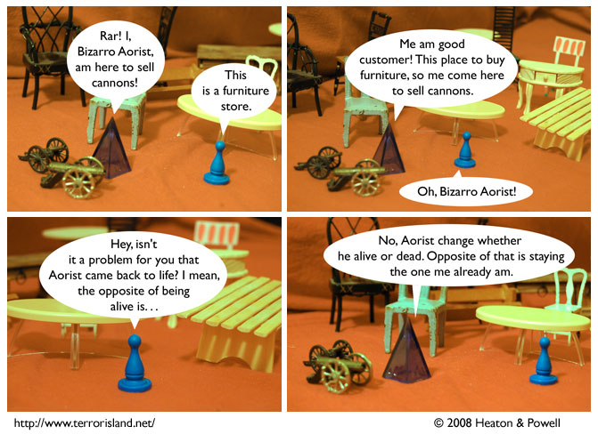

Strip #310
— Wednesday, June 4, 2008
This is the opposite of Aorist, who doesn’t try to be a good customer, but is anyway.
Notes, Thoughts, &c.
Ben’s Notes
I hope you’re now adequately reassured about Bizarro Aorist’s status.
Lewis’s Notes
These comments were pre-written, because I am busy taking a very important exam for grad school. We haven’t finalized the comics yet (as I write this) but I think I can make my comments appropriate to however this turns out: Man, I can’t believe Sid and Stephen were able to get out of that scrape!